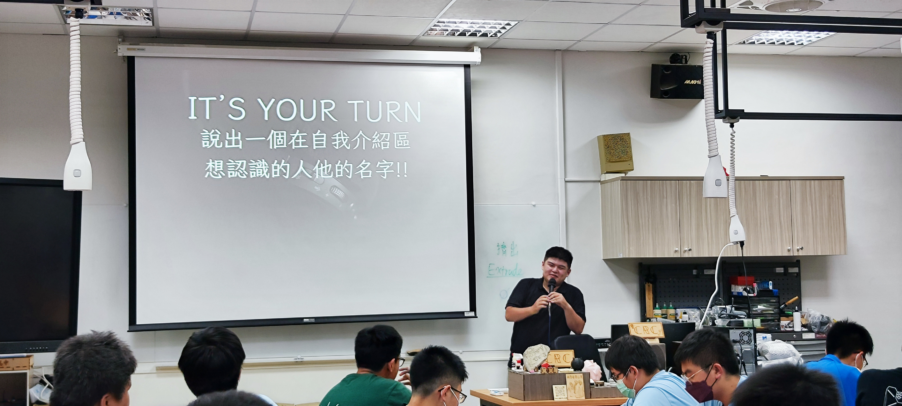
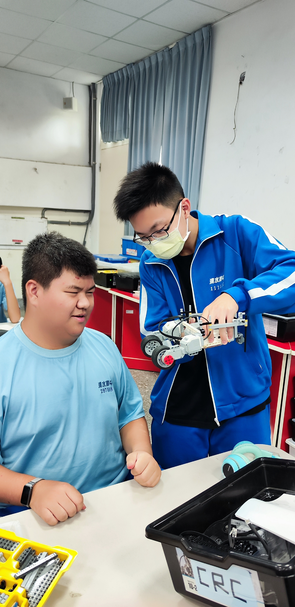
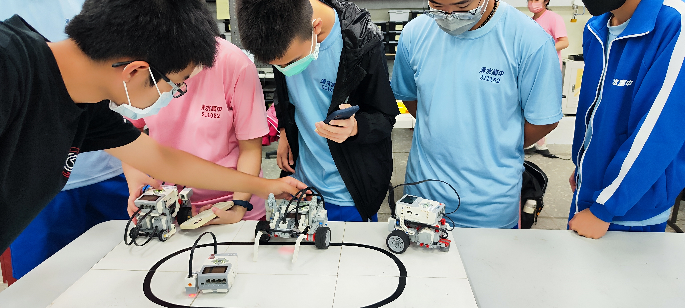
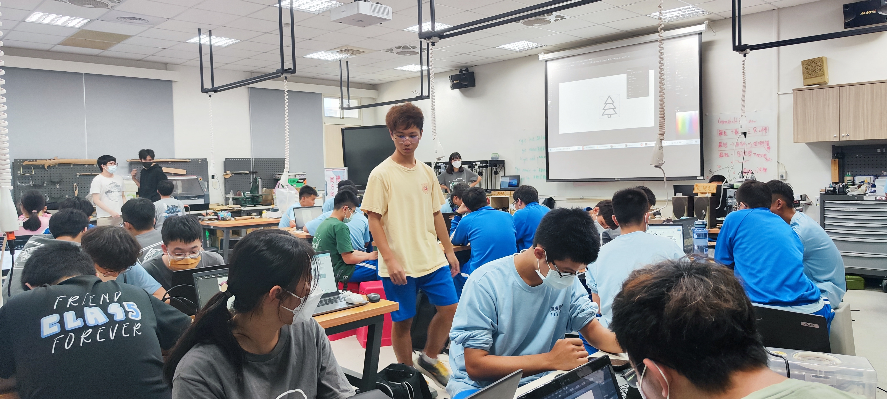
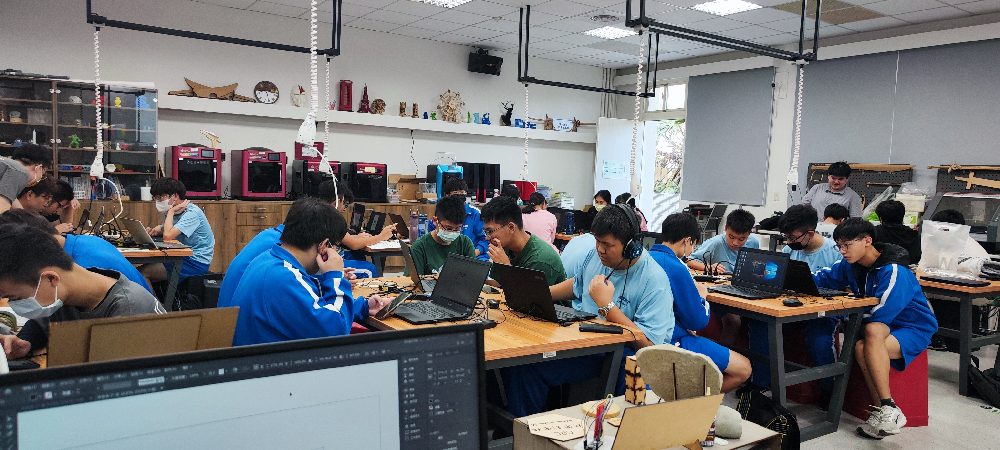
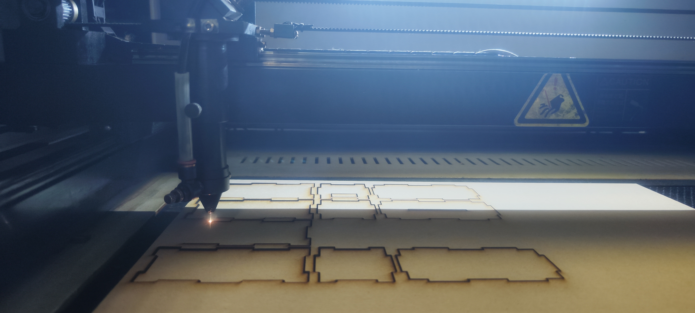
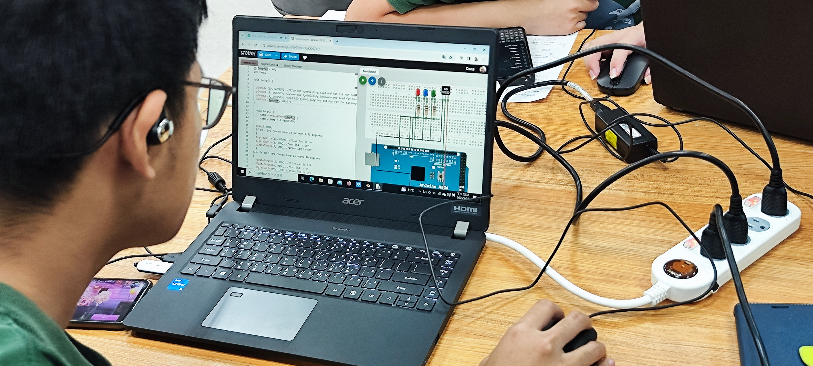
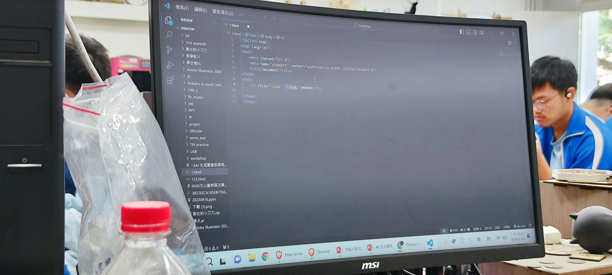

社團課程
上學期
第一周
向社員介紹幹部，讓新進社員了解社團器材以及資源
第二周&第三周&第四周
學習如何使用樂高EV3製作循線車，並讓社員競速交流想法
 第五周&第六周
使用illustrator繪圖，之後使用雷雕機刻出圖案，製作一個屬於自己的小夜燈
  下學期
第一周
介紹ARDUINO的相關知識，以及3D列印機的原理及使用
第二周&第三周&第四周
分成兩組分別進行課程
網頁組
基本HTML和CSS的學習，教導社員如何從零到有製作一個屬於自己的網站
建模組
學習基本的Blender動畫建模軟體，教導社員如何在電腦上實現現實中的物體以及物理特性
第五周&第六周
教導社員使用ESP32實現自製TOI物聯網功能